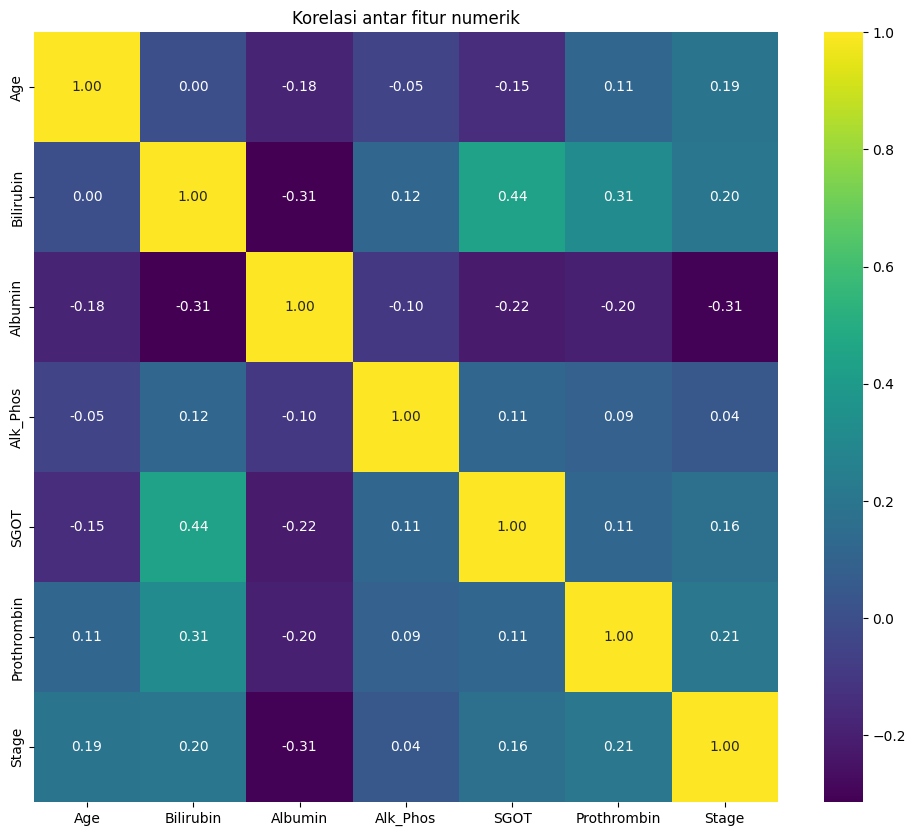
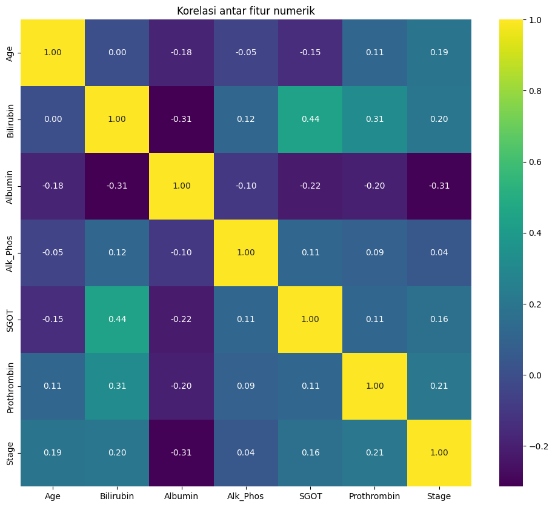

Proyek UTS Pendata#
##Install Pustaka pip install ucimlrepo digunakan untuk menginstal pustaka Python bernama ucimlrepo dari Python Package Index (PyPI). Pustaka ini memungkinkan kita untuk mengakses dataset dari UCI Machine Learning Repository secara langsung lewat kode Python, tanpa perlu mengunduh file secara manual.
pip install ucimlrepo
Requirement already satisfied: ucimlrepo in /usr/local/python/3.12.1/lib/python3.12/site-packages (0.0.7)
Requirement already satisfied: pandas>=1.0.0 in /home/codespace/.local/lib/python3.12/site-packages (from ucimlrepo) (2.2.3)
Requirement already satisfied: certifi>=2020.12.5 in /home/codespace/.local/lib/python3.12/site-packages (from ucimlrepo) (2024.8.30)
Requirement already satisfied: numpy>=1.26.0 in /home/codespace/.local/lib/python3.12/site-packages (from pandas>=1.0.0->ucimlrepo) (2.2.0)
Requirement already satisfied: python-dateutil>=2.8.2 in /home/codespace/.local/lib/python3.12/site-packages (from pandas>=1.0.0->ucimlrepo) (2.9.0.post0)
Requirement already satisfied: pytz>=2020.1 in /home/codespace/.local/lib/python3.12/site-packages (from pandas>=1.0.0->ucimlrepo) (2024.2)
Requirement already satisfied: tzdata>=2022.7 in /home/codespace/.local/lib/python3.12/site-packages (from pandas>=1.0.0->ucimlrepo) (2024.2)
Requirement already satisfied: six>=1.5 in /home/codespace/.local/lib/python3.12/site-packages (from python-dateutil>=2.8.2->pandas>=1.0.0->ucimlrepo) (1.17.0)
Note: you may need to restart the kernel to use updated packages.
Import dataset#
Import dataset digunakan untuk mengambil data yang ada pada repository atau dataset yang dipublikasi yang akan digunakan untuk menganalisis datanya.
from ucimlrepo import fetch_ucirepo
# fetch dataset
cirrhosis_patient_survival_prediction = fetch_ucirepo(id=878)
# data (as pandas dataframes)
X = cirrhosis_patient_survival_prediction.data.features
y = cirrhosis_patient_survival_prediction.data.targets
# metadata
print(cirrhosis_patient_survival_prediction.metadata)
# variable information
print(cirrhosis_patient_survival_prediction.variables)
{'uci_id': 878, 'name': 'Cirrhosis Patient Survival Prediction', 'repository_url': 'https://archive.ics.uci.edu/dataset/878/cirrhosis+patient+survival+prediction+dataset-1', 'data_url': 'https://archive.ics.uci.edu/static/public/878/data.csv', 'abstract': 'Utilize 17 clinical features for predicting survival state of patients with liver cirrhosis. The survival states include 0 = D (death), 1 = C (censored), 2 = CL (censored due to liver transplantation).', 'area': 'Health and Medicine', 'tasks': ['Classification'], 'characteristics': ['Tabular'], 'num_instances': 418, 'num_features': 17, 'feature_types': ['Real', 'Categorical'], 'demographics': ['Age', 'Sex'], 'target_col': ['Status'], 'index_col': ['ID'], 'has_missing_values': 'yes', 'missing_values_symbol': 'NaN', 'year_of_dataset_creation': 1989, 'last_updated': 'Fri Nov 03 2023', 'dataset_doi': '10.24432/C5R02G', 'creators': ['E. Dickson', 'P. Grambsch', 'T. Fleming', 'L. Fisher', 'A. Langworthy'], 'intro_paper': {'ID': 296, 'type': 'NATIVE', 'title': 'Prognosis in primary biliary cirrhosis: Model for decision making', 'authors': 'E. Dickson, P. Grambsch, T. Fleming, L. Fisher, A. Langworthy', 'venue': 'Hepatology', 'year': 1989, 'journal': None, 'DOI': None, 'URL': 'https://www.semanticscholar.org/paper/db1487216b8a4b26f5e5078ea9109ac9d8355b65', 'sha': None, 'corpus': None, 'arxiv': None, 'mag': None, 'acl': None, 'pmid': None, 'pmcid': None}, 'additional_info': {'summary': "During 1974 to 1984, 424 PBC patients referred to the Mayo Clinic qualified for the randomized placebo-controlled trial testing the drug D-penicillamine. Of these, the initial 312 patients took part in the trial and have mostly comprehensive data. The remaining 112 patients didn't join the clinical trial but agreed to record basic metrics and undergo survival tracking. Six of these patients were soon untraceable after their diagnosis, leaving data for 106 of these individuals in addition to the 312 who were part of the randomized trial.", 'purpose': 'Cirrhosis results from prolonged liver damage, leading to extensive scarring, often due to conditions like hepatitis or chronic alcohol consumption. The data provided is sourced from a Mayo Clinic study on primary biliary cirrhosis (PBC) of the liver carried out from 1974 to 1984.', 'funded_by': 'Mayo Clinic', 'instances_represent': 'People', 'recommended_data_splits': None, 'sensitive_data': 'Gender, Age', 'preprocessing_description': '1. Drop all the rows where miss value (NA) were present in the Drug column\n2. Impute missing values with mean results\n3. One-hot encoding for all category attributes', 'variable_info': '1. ID: unique identifier\n2. N_Days: number of days between registration and the earlier of death, transplantation, or study analysis time in July 1986\n3. Status: status of the patient C (censored), CL (censored due to liver tx), or D (death)\n4. Drug: type of drug D-penicillamine or placebo\n5. Age: age in [days]\n6. Sex: M (male) or F (female)\n7. Ascites: presence of ascites N (No) or Y (Yes)\n8. Hepatomegaly: presence of hepatomegaly N (No) or Y (Yes)\n9. Spiders: presence of spiders N (No) or Y (Yes)\n10. Edema: presence of edema N (no edema and no diuretic therapy for edema), S (edema present without diuretics, or edema resolved by diuretics), or Y (edema despite diuretic therapy)\n11. Bilirubin: serum bilirubin in [mg/dl]\n12. Cholesterol: serum cholesterol in [mg/dl]\n13. Albumin: albumin in [gm/dl]\n14. Copper: urine copper in [ug/day]\n15. Alk_Phos: alkaline phosphatase in [U/liter]\n16. SGOT: SGOT in [U/ml]\n17. Triglycerides: triglicerides in [mg/dl]\n18. Platelets: platelets per cubic [ml/1000]\n19. Prothrombin: prothrombin time in seconds [s]\n20. Stage: histologic stage of disease (1, 2, 3, or 4)\n', 'citation': 'Fleming, Thomas R., and David P. Harrington. Counting processes and survival analysis. Vol. 625. John Wiley & Sons, 2013.'}}
name role type demographic \
0 ID ID Integer None
1 N_Days Other Integer None
2 Status Target Categorical None
3 Drug Feature Categorical None
4 Age Feature Integer Age
5 Sex Feature Categorical Sex
6 Ascites Feature Categorical None
7 Hepatomegaly Feature Categorical None
8 Spiders Feature Categorical None
9 Edema Feature Categorical None
10 Bilirubin Feature Continuous None
11 Cholesterol Feature Integer None
12 Albumin Feature Continuous None
13 Copper Feature Integer None
14 Alk_Phos Feature Continuous None
15 SGOT Feature Continuous None
16 Tryglicerides Feature Integer None
17 Platelets Feature Integer None
18 Prothrombin Feature Continuous None
19 Stage Feature Categorical None
description units missing_values
0 unique identifier None no
1 number of days between registration and the ea... None no
2 status of the patient C (censored), CL (censor... None no
3 type of drug D-penicillamine or placebo None yes
4 age days no
5 M (male) or F (female) None no
6 presence of ascites N (No) or Y (Yes) None yes
7 presence of hepatomegaly N (No) or Y (Yes) None yes
8 presence of spiders N (No) or Y (Yes) None yes
9 presence of edema N (no edema and no diuretic ... None no
10 serum bilirubin mg/dl no
11 serum cholesterol mg/dl yes
12 albumin gm/dl no
13 urine copper ug/day yes
14 alkaline phosphatase U/liter yes
15 SGOT U/ml yes
16 tryglicerides None yes
17 platelets per cubic ml/1000 yes
18 prothrombin time s yes
19 histologic stage of disease (1, 2, 3, or 4) None yes
1. Analisis Data dan Visualisasi Serta Korelasi Fitur dalam Dataset (DATA UNDERSTANDING)#
data Teratas: Menampilkan lima baris pertama dataset yang membantu untuk melihat gambaran umum data dan memeriksa apakah ada masalah atau keanehan dalam pengambilan data.
Struktur Data: Dengan fungsi info(), kita mendapatkan gambaran tentang jumlah kolom, tipe data, serta jumlah data non-null pada setiap kolom. Ini penting untuk memastikan bahwa dataset terstruktur dengan benar.
Statistik Deskriptif: Fungsi describe() memberikan statistik dasar dari data numerik, seperti rata-rata, standar deviasi, nilai minimum dan maksimum, serta kuartil. Statistik deskriptif ini membantu dalam memahami distribusi dan variabilitas data.
Missing Values: Melalui pengecekan missing values, kita dapat mengetahui apakah ada data yang hilang dalam dataset. Hal ini penting untuk mengetahui langkah-langkah perbaikan yang diperlukan, seperti imputasi atau penghapusan baris/kolom yang mengandung missing value.
Distribusi Kategori: Untuk kolom kategorikal, kita melihat distribusi nilai menggunakan value_counts(). Ini penting untuk memahami proporsi masing-masing kategori dan apakah ada ketidakseimbangan dalam data yang dapat mempengaruhi analisis.
Distribusi Umur: Jika kolom Age ada, kita memvisualisasikan distribusinya dengan histogram dan KDE (Kernel Density Estimation). Ini memberikan gambaran visual tentang sebaran usia dalam dataset, apakah terdistribusi merata atau terkonsentrasi pada rentang usia tertentu.
Korelasi Antar Fitur: Dengan visualisasi heatmap korelasi, kita dapat melihat hubungan antar fitur numerik. Korelasi ini membantu dalam menentukan apakah ada fitur yang sangat berhubungan satu sama lain, yang dapat berguna dalam pemilihan fitur atau teknik pengurangan dimensi.
import pandas as pd
import matplotlib.pyplot as plt
import seaborn as sns
# Gabungkan fitur dan target agar mudah dianalisis bersama
df = pd.concat([X, y], axis=1)
# 1. Tampilkan data teratas
print(" 5 Data Teratas:")
print(df.head())
# 2. Info struktur data
print("\n Info Struktur Data:")
print(df.info())
# 3. Statistik deskriptif
print("\n Statistik Deskriptif:")
print(df.describe(include='all'))
# 4. Cek missing value
print("\n Jumlah Missing Values Tiap Kolom:")
print(df.isnull().sum())
# 5. Distribusi kategori (jika ada kolom kategorikal)
kategori_cols = df.select_dtypes(include=['object', 'category']).columns.tolist()
for col in kategori_cols:
print(f"\n Distribusi nilai pada kolom '{col}':")
print(df[col].value_counts())
# 6. Visualisasi distribusi umur (jika ada)
if 'Age' in df.columns:
plt.figure(figsize=(8, 4))
sns.histplot(df['Age'], bins=30, kde=True, color='salmon')
plt.title('Distribusi Umur')
plt.xlabel('Umur')
plt.ylabel('Frekuensi')
plt.show()
# 7. Korelasi antar fitur numerik
plt.figure(figsize=(12, 10))
sns.heatmap(df.corr(numeric_only=True), annot=True, cmap='viridis', fmt=".2f")
plt.title("Korelasi antar fitur numerik")
plt.show()
print("\nInformasi Variabel:")
print(cirrhosis_patient_survival_prediction.variables)
5 Data Teratas:
Drug Age Sex Ascites Hepatomegaly Spiders Edema Bilirubin \
0 D-penicillamine 21464 F Y Y Y Y 14.5
1 D-penicillamine 20617 F N Y Y N 1.1
2 D-penicillamine 25594 M N N N S 1.4
3 D-penicillamine 19994 F N Y Y S 1.8
4 Placebo 13918 F N Y Y N 3.4
Cholesterol Albumin Copper Alk_Phos SGOT Tryglicerides Platelets \
0 261 2.60 156 1718.0 137.95 172 190
1 302 4.14 54 7394.8 113.52 88 221
2 176 3.48 210 516.0 96.10 55 151
3 244 2.54 64 6121.8 60.63 92 183
4 279 3.53 143 671.0 113.15 72 136
Prothrombin Stage Status
0 12.2 4.0 D
1 10.6 3.0 C
2 12.0 4.0 D
3 10.3 4.0 D
4 10.9 3.0 CL
Info Struktur Data:
<class 'pandas.core.frame.DataFrame'>
RangeIndex: 418 entries, 0 to 417
Data columns (total 18 columns):
# Column Non-Null Count Dtype
--- ------ -------------- -----
0 Drug 313 non-null object
1 Age 418 non-null int64
2 Sex 418 non-null object
3 Ascites 313 non-null object
4 Hepatomegaly 313 non-null object
5 Spiders 313 non-null object
6 Edema 418 non-null object
7 Bilirubin 418 non-null float64
8 Cholesterol 312 non-null object
9 Albumin 418 non-null float64
10 Copper 312 non-null object
11 Alk_Phos 312 non-null float64
12 SGOT 312 non-null float64
13 Tryglicerides 312 non-null object
14 Platelets 411 non-null object
15 Prothrombin 416 non-null float64
16 Stage 412 non-null float64
17 Status 418 non-null object
dtypes: float64(6), int64(1), object(11)
memory usage: 58.9+ KB
None
Statistik Deskriptif:
Drug Age Sex Ascites Hepatomegaly Spiders Edema \
count 313 418.000000 418 313 313 313 418
unique 3 NaN 2 3 3 3 3
top D-penicillamine NaN F N Y N N
freq 158 NaN 374 288 160 222 354
mean NaN 18533.351675 NaN NaN NaN NaN NaN
std NaN 3815.845055 NaN NaN NaN NaN NaN
min NaN 9598.000000 NaN NaN NaN NaN NaN
25% NaN 15644.500000 NaN NaN NaN NaN NaN
50% NaN 18628.000000 NaN NaN NaN NaN NaN
75% NaN 21272.500000 NaN NaN NaN NaN NaN
max NaN 28650.000000 NaN NaN NaN NaN NaN
Bilirubin Cholesterol Albumin Copper Alk_Phos SGOT \
count 418.000000 312 418.000000 312 312.000000 312.000000
unique NaN 202 NaN 159 NaN NaN
top NaN NaNN NaN 52 NaN NaN
freq NaN 28 NaN 8 NaN NaN
mean 3.220813 NaN 3.497440 NaN 1982.655769 122.556346
std 4.407506 NaN 0.424972 NaN 2140.388824 56.699525
min 0.300000 NaN 1.960000 NaN 289.000000 26.350000
25% 0.800000 NaN 3.242500 NaN 871.500000 80.600000
50% 1.400000 NaN 3.530000 NaN 1259.000000 114.700000
75% 3.400000 NaN 3.770000 NaN 1980.000000 151.900000
max 28.000000 NaN 4.640000 NaN 13862.400000 457.250000
Tryglicerides Platelets Prothrombin Stage Status
count 312 411 416.000000 412.000000 418
unique 147 244 NaN NaN 3
top NaNN 344 NaN NaN C
freq 30 6 NaN NaN 232
mean NaN NaN 10.731731 3.024272 NaN
std NaN NaN 1.022000 0.882042 NaN
min NaN NaN 9.000000 1.000000 NaN
25% NaN NaN 10.000000 2.000000 NaN
50% NaN NaN 10.600000 3.000000 NaN
75% NaN NaN 11.100000 4.000000 NaN
max NaN NaN 18.000000 4.000000 NaN
Jumlah Missing Values Tiap Kolom:
Drug 105
Age 0
Sex 0
Ascites 105
Hepatomegaly 105
Spiders 105
Edema 0
Bilirubin 0
Cholesterol 106
Albumin 0
Copper 106
Alk_Phos 106
SGOT 106
Tryglicerides 106
Platelets 7
Prothrombin 2
Stage 6
Status 0
dtype: int64
Distribusi nilai pada kolom 'Drug':
Drug
D-penicillamine 158
Placebo 154
NaNN 1
Name: count, dtype: int64
Distribusi nilai pada kolom 'Sex':
Sex
F 374
M 44
Name: count, dtype: int64
Distribusi nilai pada kolom 'Ascites':
Ascites
N 288
Y 24
NaNN 1
Name: count, dtype: int64
Distribusi nilai pada kolom 'Hepatomegaly':
Hepatomegaly
Y 160
N 152
NaNN 1
Name: count, dtype: int64
Distribusi nilai pada kolom 'Spiders':
Spiders
N 222
Y 90
NaNN 1
Name: count, dtype: int64
Distribusi nilai pada kolom 'Edema':
Edema
N 354
S 44
Y 20
Name: count, dtype: int64
Distribusi nilai pada kolom 'Cholesterol':
Cholesterol
NaNN 28
260 4
316 4
448 4
242 3
..
342 1
393 1
335 1
434 1
576 1
Name: count, Length: 202, dtype: int64
Distribusi nilai pada kolom 'Copper':
Copper
52 8
67 7
58 6
75 6
73 5
..
196 1
100 1
90 1
234 1
186 1
Name: count, Length: 159, dtype: int64
Distribusi nilai pada kolom 'Tryglicerides':
Tryglicerides
NaNN 30
118 7
91 6
90 6
101 5
..
153 1
127 1
144 1
59 1
82 1
Name: count, Length: 147, dtype: int64
Distribusi nilai pada kolom 'Platelets':
Platelets
344 6
213 5
165 5
269 5
233 4
..
219 1
220 1
162 1
174 1
350 1
Name: count, Length: 244, dtype: int64
Distribusi nilai pada kolom 'Status':
Status
C 232
D 161
CL 25
Name: count, dtype: int64
 

Informasi Variabel:
name role type demographic \
0 ID ID Integer None
1 N_Days Other Integer None
2 Status Target Categorical None
3 Drug Feature Categorical None
4 Age Feature Integer Age
5 Sex Feature Categorical Sex
6 Ascites Feature Categorical None
7 Hepatomegaly Feature Categorical None
8 Spiders Feature Categorical None
9 Edema Feature Categorical None
10 Bilirubin Feature Continuous None
11 Cholesterol Feature Integer None
12 Albumin Feature Continuous None
13 Copper Feature Integer None
14 Alk_Phos Feature Continuous None
15 SGOT Feature Continuous None
16 Tryglicerides Feature Integer None
17 Platelets Feature Integer None
18 Prothrombin Feature Continuous None
19 Stage Feature Categorical None
description units missing_values
0 unique identifier None no
1 number of days between registration and the ea... None no
2 status of the patient C (censored), CL (censor... None no
3 type of drug D-penicillamine or placebo None yes
4 age days no
5 M (male) or F (female) None no
6 presence of ascites N (No) or Y (Yes) None yes
7 presence of hepatomegaly N (No) or Y (Yes) None yes
8 presence of spiders N (No) or Y (Yes) None yes
9 presence of edema N (no edema and no diuretic ... None no
10 serum bilirubin mg/dl no
11 serum cholesterol mg/dl yes
12 albumin gm/dl no
13 urine copper ug/day yes
14 alkaline phosphatase U/liter yes
15 SGOT U/ml yes
16 tryglicerides None yes
17 platelets per cubic ml/1000 yes
18 prothrombin time s yes
19 histologic stage of disease (1, 2, 3, or 4) None yes
2. Pemrosesan awal data (Preprocessing)#
Kode di bawah melakukan serangkaian tahapan preprocessing data untuk dataset pasien sirosis hati. Pertama, data numerik dan kategorikal dipisahkan untuk memudahkan imputasi nilai yang hilang.
Kolom numerik diimputasi menggunakan rata-rata (mean), sementara kolom kategorikal diimputasi menggunakan nilai yang paling sering muncul (most_frequent). Setelah itu, kolom numerik dan kategorikal yang telah diimputasi digabungkan kembali. Selanjutnya, kolom kategorikal diubah menjadi variabel biner (one-hot encoding) menggunakan pd.get_dummies(). Fitur numerik kemudian distandarisasi dengan menggunakan StandardScaler untuk memastikan bahwa setiap fitur memiliki skala yang sama. Terakhir, data dipisahkan menjadi data pelatihan dan pengujian (80:20) dengan menggunakan train_test_split. Hasil akhir dari preprocessing ini adalah data yang siap digunakan untuk analisis atau pelatihan model, dengan ukuran data pelatihan dan pengujian yang ditampilkan pada output.
import pandas as pd
from sklearn.model_selection import train_test_split
from sklearn.preprocessing import StandardScaler
from sklearn.impute import SimpleImputer
# Mengambil data dan target
X = cirrhosis_patient_survival_prediction.data.features
y = cirrhosis_patient_survival_prediction.data.targets
# Menampilkan kolom-kolom dalam X
print("Kolom dalam X:")
print(X.columns)
# 1. Memisahkan kolom numerik dan kategorikal
num_cols = X.select_dtypes(include=['float64', 'int64']).columns
cat_cols = X.select_dtypes(include=['object']).columns
# 2. Imputasi untuk kolom numerik (menggunakan mean)
num_imputer = SimpleImputer(strategy='mean')
X_num = pd.DataFrame(num_imputer.fit_transform(X[num_cols]), columns=num_cols)
print("\nSetelah imputasi kolom numerik:")
print(X_num.head()) # Menampilkan 5 baris pertama dari kolom numerik yang telah diimputasi
# 3. Imputasi untuk kolom kategorikal (menggunakan modus / nilai yang paling sering muncul)
cat_imputer = SimpleImputer(strategy='most_frequent')
X_cat = pd.DataFrame(cat_imputer.fit_transform(X[cat_cols]), columns=cat_cols)
print("\nSetelah imputasi kolom kategorikal:")
print(X_cat.head()) # Menampilkan 5 baris pertama dari kolom kategorikal yang telah diimputasi
# 4. Menggabungkan kembali kolom numerik dan kategorikal
X_clean = pd.concat([X_num, X_cat], axis=1)
print("\nSetelah penggabungan kolom numerik dan kategorikal:")
print(X_clean.head()) # Menampilkan 5 baris pertama setelah penggabungan
# 5. Encoding kolom kategorikal
X_encoded = pd.get_dummies(X_clean)
print("\nSetelah encoding kolom kategorikal:")
print(X_encoded.head()) # Menampilkan 5 baris pertama setelah encoding
# 6. Scaling fitur numerik
scaler = StandardScaler()
X_scaled = scaler.fit_transform(X_encoded)
print("\nSetelah scaling fitur numerik:")
print(pd.DataFrame(X_scaled, columns=X_encoded.columns).head()) # Menampilkan 5 baris pertama setelah scaling
# 7. Memisahkan data menjadi training dan testing set
X_train, X_test, y_train, y_test = train_test_split(X_scaled, y, test_size=0.2, random_state=42)
# Menampilkan informasi mengenai data setelah preprocessing
print("\nData setelah preprocessing:")
print(f"Shape data training: {X_train.shape}")
print(f"Shape data testing: {X_test.shape}")
Kolom dalam X:
Index(['Drug', 'Age', 'Sex', 'Ascites', 'Hepatomegaly', 'Spiders', 'Edema',
'Bilirubin', 'Cholesterol', 'Albumin', 'Copper', 'Alk_Phos', 'SGOT',
'Tryglicerides', 'Platelets', 'Prothrombin', 'Stage'],
dtype='object')
Setelah imputasi kolom numerik:
Age Bilirubin Albumin Alk_Phos SGOT Prothrombin Stage
0 21464.0 14.5 2.60 1718.0 137.95 12.2 4.0
1 20617.0 1.1 4.14 7394.8 113.52 10.6 3.0
2 25594.0 1.4 3.48 516.0 96.10 12.0 4.0
3 19994.0 1.8 2.54 6121.8 60.63 10.3 4.0
4 13918.0 3.4 3.53 671.0 113.15 10.9 3.0
Setelah imputasi kolom kategorikal:
Drug Sex Ascites Hepatomegaly Spiders Edema Cholesterol Copper \
0 D-penicillamine F Y Y Y Y 261 156
1 D-penicillamine F N Y Y N 302 54
2 D-penicillamine M N N N S 176 210
3 D-penicillamine F N Y Y S 244 64
4 Placebo F N Y Y N 279 143
Tryglicerides Platelets
0 172 190
1 88 221
2 55 151
3 92 183
4 72 136
Setelah penggabungan kolom numerik dan kategorikal:
Age Bilirubin Albumin Alk_Phos SGOT Prothrombin Stage \
0 21464.0 14.5 2.60 1718.0 137.95 12.2 4.0
1 20617.0 1.1 4.14 7394.8 113.52 10.6 3.0
2 25594.0 1.4 3.48 516.0 96.10 12.0 4.0
3 19994.0 1.8 2.54 6121.8 60.63 10.3 4.0
4 13918.0 3.4 3.53 671.0 113.15 10.9 3.0
Drug Sex Ascites Hepatomegaly Spiders Edema Cholesterol Copper \
0 D-penicillamine F Y Y Y Y 261 156
1 D-penicillamine F N Y Y N 302 54
2 D-penicillamine M N N N S 176 210
3 D-penicillamine F N Y Y S 244 64
4 Placebo F N Y Y N 279 143
Tryglicerides Platelets
0 172 190
1 88 221
2 55 151
3 92 183
4 72 136
Setelah encoding kolom kategorikal:
Age Bilirubin Albumin Alk_Phos SGOT Prothrombin Stage \
0 21464.0 14.5 2.60 1718.0 137.95 12.2 4.0
1 20617.0 1.1 4.14 7394.8 113.52 10.6 3.0
2 25594.0 1.4 3.48 516.0 96.10 12.0 4.0
3 19994.0 1.8 2.54 6121.8 60.63 10.3 4.0
4 13918.0 3.4 3.53 671.0 113.15 10.9 3.0
Drug_D-penicillamine Drug_NaNN Drug_Placebo ... Platelets_721 \
0 True False False ... False
1 True False False ... False
2 True False False ... False
3 True False False ... False
4 False False True ... False
Platelets_76 Platelets_79 Platelets_80 Platelets_81 Platelets_88 \
0 False False False False False
1 False False False False False
2 False False False False False
3 False False False False False
4 False False False False False
Platelets_92 Platelets_95 Platelets_97 Platelets_NaNN
0 False False False False
1 False False False False
2 False False False False
3 False False False False
4 False False False False
[5 rows x 776 columns]
Setelah scaling fitur numerik:
Age Bilirubin Albumin Alk_Phos SGOT Prothrombin Stage \
0 0.768941 2.562152 -2.114296 -0.143350 0.314753 1.441846 1.115596
1 0.546706 -0.481759 1.513818 2.931464 -0.184766 -0.129360 -0.027751
2 1.852567 -0.413611 -0.041088 -0.794408 -0.540952 1.245445 1.115596
3 0.383244 -0.322748 -2.255651 2.241950 -1.266205 -0.423961 1.115596
4 -1.210972 0.040704 0.076708 -0.710453 -0.192331 0.165241 -0.027751
Drug_D-penicillamine Drug_NaNN Drug_Placebo ... Platelets_721 \
0 0.767694 -0.04897 -0.763763 ... -0.04897
1 0.767694 -0.04897 -0.763763 ... -0.04897
2 0.767694 -0.04897 -0.763763 ... -0.04897
3 0.767694 -0.04897 -0.763763 ... -0.04897
4 -1.302603 -0.04897 1.309307 ... -0.04897
Platelets_76 Platelets_79 Platelets_80 Platelets_81 Platelets_88 \
0 -0.04897 -0.04897 -0.069338 -0.04897 -0.04897
1 -0.04897 -0.04897 -0.069338 -0.04897 -0.04897
2 -0.04897 -0.04897 -0.069338 -0.04897 -0.04897
3 -0.04897 -0.04897 -0.069338 -0.04897 -0.04897
4 -0.04897 -0.04897 -0.069338 -0.04897 -0.04897
Platelets_92 Platelets_95 Platelets_97 Platelets_NaNN
0 -0.04897 -0.069338 -0.04897 -0.098295
1 -0.04897 -0.069338 -0.04897 -0.098295
2 -0.04897 -0.069338 -0.04897 -0.098295
3 -0.04897 -0.069338 -0.04897 -0.098295
4 -0.04897 -0.069338 -0.04897 -0.098295
[5 rows x 776 columns]
Data setelah preprocessing:
Shape data training: (334, 776)
Shape data testing: (84, 776)
import matplotlib.pyplot as plt
import seaborn as sns
# 1. Visualisasi distribusi kolom numerik sebelum dan setelah imputasi
plt.figure(figsize=(14, 6))
# Sebelum imputasi
plt.subplot(1, 2, 1)
sns.boxplot(data=X[num_cols])
plt.title("Distribusi Kolom Numerik Sebelum Imputasi")
# Setelah imputasi
plt.subplot(1, 2, 2)
sns.boxplot(data=X_num)
plt.title("Distribusi Kolom Numerik Setelah Imputasi")
plt.tight_layout()
plt.show()
# 2. Visualisasi distribusi kolom kategorikal (sebelum dan setelah encoding)
# Sebelum encoding
plt.figure(figsize=(8, 4))
X_cat_mode = X[cat_cols].mode().iloc[0] # Mengambil modus sebagai representasi
sns.countplot(data=X[cat_cols], palette='viridis')
plt.title("Distribusi Kolom Kategorikal Sebelum Encoding")
plt.xticks(rotation=90)
plt.tight_layout()
plt.show()
# 3. Visualisasi distribusi fitur numerik setelah scaling
plt.figure(figsize=(12, 6))
sns.boxplot(data=pd.DataFrame(X_scaled, columns=X_encoded.columns))
plt.title("Distribusi Kolom Numerik Setelah Scaling")
plt.tight_layout()
plt.show()
3. Pemodelan (model klasifikasi)#
Pada tahap pemodelan, dua algoritma klasifikasi digunakan yaitu Logistic Regression dan Random Forest. Logistic Regression digunakan sebagai baseline model karena sederhana dan efektif untuk interpretasi awal. Model ini dilatih menggunakan data training yang telah dipreproses, kemudian dilakukan prediksi terhadap data testing. Hasil evaluasi menunjukkan akurasi sekitar 64%, namun model ini kurang mampu memprediksi kelas minoritas seperti ‘CL’, ditunjukkan dengan nilai precision dan recall yang nol.
Sebaliknya, model Random Forest menunjukkan performa lebih baik dengan akurasi mencapai 75%. Model ini mampu menangani kompleksitas data dan menghasilkan prediksi yang lebih seimbang antar kelas dibandingkan Logistic Regression. Meskipun kelas ‘CL’ tetap sulit diprediksi karena data yang tidak seimbang, Random Forest memberikan nilai f1-score dan recall yang lebih tinggi untuk kelas ‘C’ dan ‘D’, menunjukkan kemampuannya menangkap pola yang lebih kompleks dalam data.
from sklearn.linear_model import LogisticRegression
from sklearn.ensemble import RandomForestClassifier
from sklearn.metrics import accuracy_score, classification_report
# 1. Pemodelan dengan Logistic Regression
log_reg_model = LogisticRegression(max_iter=10000, random_state=42)
log_reg_model.fit(X_train, y_train)
# 2. Prediksi dengan Logistic Regression
y_pred_log_reg = log_reg_model.predict(X_test)
# 3. Evaluasi model Logistic Regression
print("\nModel Logistic Regression:")
print("Accuracy:", accuracy_score(y_test, y_pred_log_reg))
print("\nClassification Report:")
print(classification_report(y_test, y_pred_log_reg))
# 4. Pemodelan dengan Random Forest
rf_model = RandomForestClassifier(n_estimators=100, random_state=42)
rf_model.fit(X_train, y_train)
# 5. Prediksi dengan Random Forest
y_pred_rf = rf_model.predict(X_test)
# 6. Evaluasi model Random Forest
print("\nModel Random Forest:")
print("Accuracy:", accuracy_score(y_test, y_pred_rf))
print("\nClassification Report:")
print(classification_report(y_test, y_pred_rf))
/home/codespace/.local/lib/python3.12/site-packages/sklearn/utils/validation.py:1408: DataConversionWarning: A column-vector y was passed when a 1d array was expected. Please change the shape of y to (n_samples, ), for example using ravel().
y = column_or_1d(y, warn=True)
/home/codespace/.local/lib/python3.12/site-packages/sklearn/base.py:1389: DataConversionWarning: A column-vector y was passed when a 1d array was expected. Please change the shape of y to (n_samples,), for example using ravel().
return fit_method(estimator, *args, **kwargs)
Model Logistic Regression:
Accuracy: 0.6428571428571429
Classification Report:
precision recall f1-score support
C 0.65 0.75 0.69 44
CL 0.00 0.00 0.00 4
D 0.70 0.58 0.64 36
accuracy 0.64 84
macro avg 0.45 0.44 0.44 84
weighted avg 0.64 0.64 0.64 84
Model Random Forest:
Accuracy: 0.75
Classification Report:
precision recall f1-score support
C 0.77 0.84 0.80 44
CL 0.00 0.00 0.00 4
D 0.72 0.72 0.72 36
accuracy 0.75 84
macro avg 0.50 0.52 0.51 84
weighted avg 0.71 0.75 0.73 84
/home/codespace/.local/lib/python3.12/site-packages/sklearn/metrics/_classification.py:1565: UndefinedMetricWarning: Precision is ill-defined and being set to 0.0 in labels with no predicted samples. Use `zero_division` parameter to control this behavior.
_warn_prf(average, modifier, f"{metric.capitalize()} is", len(result))
/home/codespace/.local/lib/python3.12/site-packages/sklearn/metrics/_classification.py:1565: UndefinedMetricWarning: Precision is ill-defined and being set to 0.0 in labels with no predicted samples. Use `zero_division` parameter to control this behavior.
_warn_prf(average, modifier, f"{metric.capitalize()} is", len(result))
/home/codespace/.local/lib/python3.12/site-packages/sklearn/metrics/_classification.py:1565: UndefinedMetricWarning: Precision is ill-defined and being set to 0.0 in labels with no predicted samples. Use `zero_division` parameter to control this behavior.
_warn_prf(average, modifier, f"{metric.capitalize()} is", len(result))
import pandas as pd
import matplotlib.pyplot as plt
import seaborn as sns
# 7. Menampilkan 10 fitur paling penting dari Random Forest
feature_importances = rf_model.feature_importances_
feature_names = X_encoded.columns # Asumsikan X_encoded adalah nama dataframe setelah encoding
feat_imp_df = pd.DataFrame({'Feature': feature_names, 'Importance': feature_importances})
feat_imp_df = feat_imp_df.sort_values(by='Importance', ascending=False).head(10)
# 8. Visualisasi fitur penting
plt.figure(figsize=(10, 6))
sns.barplot(x='Importance', y='Feature', data=feat_imp_df, palette='viridis')
plt.title('10 Fitur Terpenting - Random Forest')
plt.xlabel('Tingkat Kepentingan')
plt.ylabel('Fitur')
plt.tight_layout()
plt.show()
/tmp/ipykernel_11130/964948345.py:13: FutureWarning:
Passing `palette` without assigning `hue` is deprecated and will be removed in v0.14.0. Assign the `y` variable to `hue` and set `legend=False` for the same effect.
sns.barplot(x='Importance', y='Feature', data=feat_imp_df, palette='viridis')
Evaluasi#
Pada tahapan evaluasi ini, dua model klasifikasi yaitu Logistic Regression dan Random Forest digunakan untuk memprediksi kelangsungan hidup pasien sirosis berdasarkan data yang telah melalui tahap praproses. Model Logistic Regression merupakan metode linier yang bekerja dengan baik pada data yang memiliki hubungan linear antar fitur. Model ini dilatih menggunakan data training dan diuji menggunakan data testing, menghasilkan nilai akurasi dan metrik evaluasi lainnya seperti precision, recall, dan f1-score yang diperoleh melalui classification_report. Hasil evaluasi ini memberikan gambaran awal sejauh mana model dapat membedakan antara kelas-kelas yang ada pada data target.
Sementara itu, Random Forest adalah metode ensemble berbasis pohon keputusan yang cenderung lebih kuat dalam menangani data yang kompleks dan non-linear. Dengan menggunakan beberapa pohon keputusan secara bersamaan, Random Forest dapat meningkatkan akurasi dan mengurangi risiko overfitting. Setelah model ini dilatih, hasil prediksi dievaluasi dengan cara yang sama seperti Logistic Regression. Melalui perbandingan akurasi dan metrik-metrik lainnya, dapat dilihat model mana yang memberikan performa terbaik dalam klasifikasi kelangsungan hidup pasien. Evaluasi ini sangat penting untuk menentukan model yang paling layak digunakan pada implementasi nyata.
import matplotlib.pyplot as plt
import seaborn as sns
from sklearn.metrics import confusion_matrix
# Logistic Regression
logreg = LogisticRegression(max_iter=10000, random_state=42)
logreg.fit(X_train, y_train)
y_pred_logreg = logreg.predict(X_test)
print("\nEvaluasi Model Logistic Regression:")
print("Accuracy:", accuracy_score(y_test, y_pred_logreg))
print("Classification Report:\n", classification_report(y_test, y_pred_logreg, zero_division=0))
# Visualisasi Confusion Matrix untuk Logistic Regression
cm_logreg = confusion_matrix(y_test, y_pred_logreg)
plt.figure(figsize=(6, 4))
sns.heatmap(cm_logreg, annot=True, fmt='d', cmap='Blues', xticklabels=logreg.classes_, yticklabels=logreg.classes_)
plt.title('Confusion Matrix - Logistic Regression')
plt.xlabel('Predicted')
plt.ylabel('Actual')
plt.show()
# Random Forest
rf = RandomForestClassifier(n_estimators=100, random_state=42)
rf.fit(X_train, y_train)
y_pred_rf = rf.predict(X_test)
print("\nEvaluasi Model Random Forest:")
print("Accuracy:", accuracy_score(y_test, y_pred_rf))
print("Classification Report:\n", classification_report(y_test, y_pred_rf, zero_division=0))
# Visualisasi Confusion Matrix untuk Random Forest
cm_rf = confusion_matrix(y_test, y_pred_rf)
plt.figure(figsize=(6, 4))
sns.heatmap(cm_rf, annot=True, fmt='d', cmap='Greens', xticklabels=rf.classes_, yticklabels=rf.classes_)
plt.title('Confusion Matrix - Random Forest')
plt.xlabel('Predicted')
plt.ylabel('Actual')
plt.show()
/home/codespace/.local/lib/python3.12/site-packages/sklearn/utils/validation.py:1408: DataConversionWarning: A column-vector y was passed when a 1d array was expected. Please change the shape of y to (n_samples, ), for example using ravel().
y = column_or_1d(y, warn=True)
Evaluasi Model Logistic Regression:
Accuracy: 0.6428571428571429
Classification Report:
precision recall f1-score support
C 0.65 0.75 0.69 44
CL 0.00 0.00 0.00 4
D 0.70 0.58 0.64 36
accuracy 0.64 84
macro avg 0.45 0.44 0.44 84
weighted avg 0.64 0.64 0.64 84
/home/codespace/.local/lib/python3.12/site-packages/sklearn/base.py:1389: DataConversionWarning: A column-vector y was passed when a 1d array was expected. Please change the shape of y to (n_samples,), for example using ravel().
return fit_method(estimator, *args, **kwargs)
Evaluasi Model Random Forest:
Accuracy: 0.75
Classification Report:
precision recall f1-score support
C 0.77 0.84 0.80 44
CL 0.00 0.00 0.00 4
D 0.72 0.72 0.72 36
accuracy 0.75 84
macro avg 0.50 0.52 0.51 84
weighted avg 0.71 0.75 0.73 84